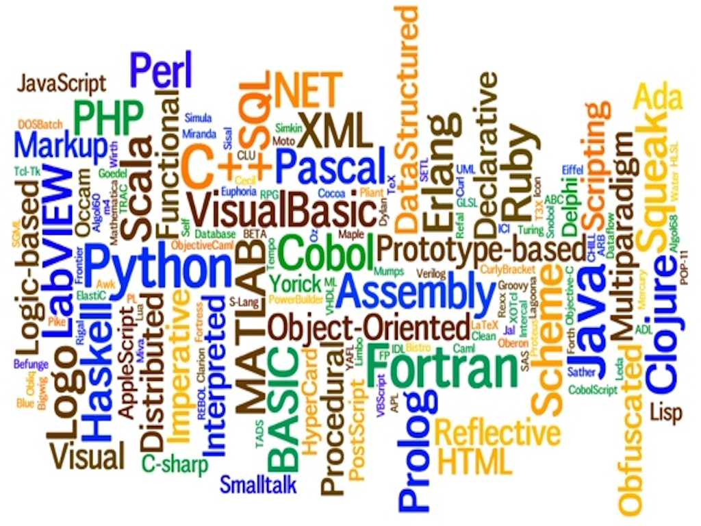

Desenvolvimento Web I
Como uma página de perfil se tornou-se um Portal de Noticias
Estrutura, semântica, páginas e links internos.

Na primeira aula, criamos uma página de perfil. Agora está página, fará parte de um portal de conteúdo sobre programação, hobbies e informação
header, nav main, section article, footer